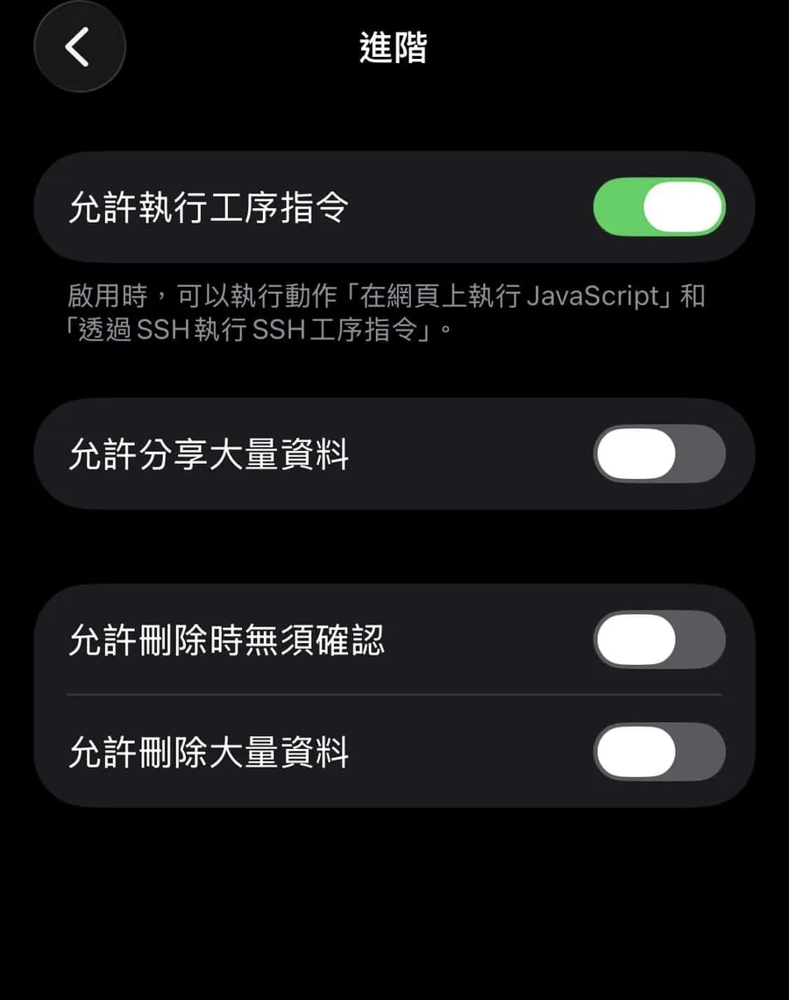
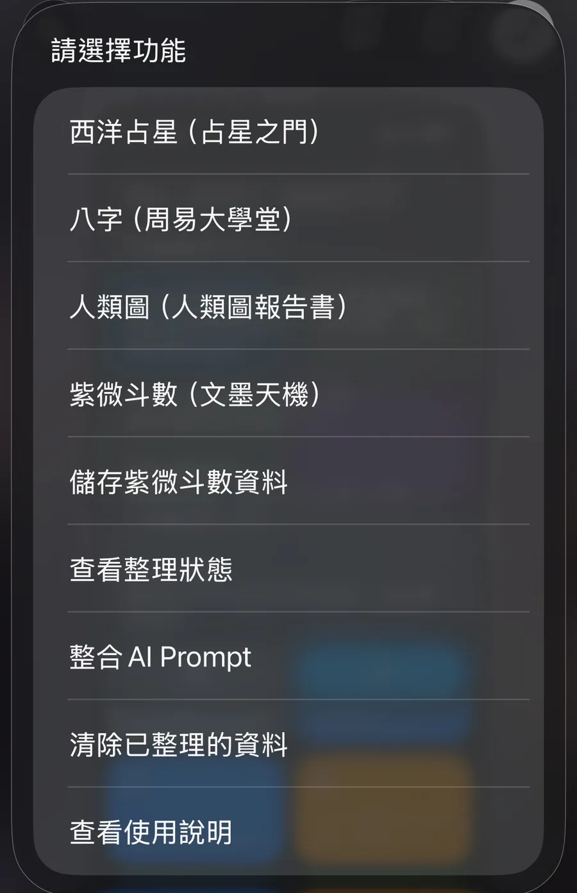
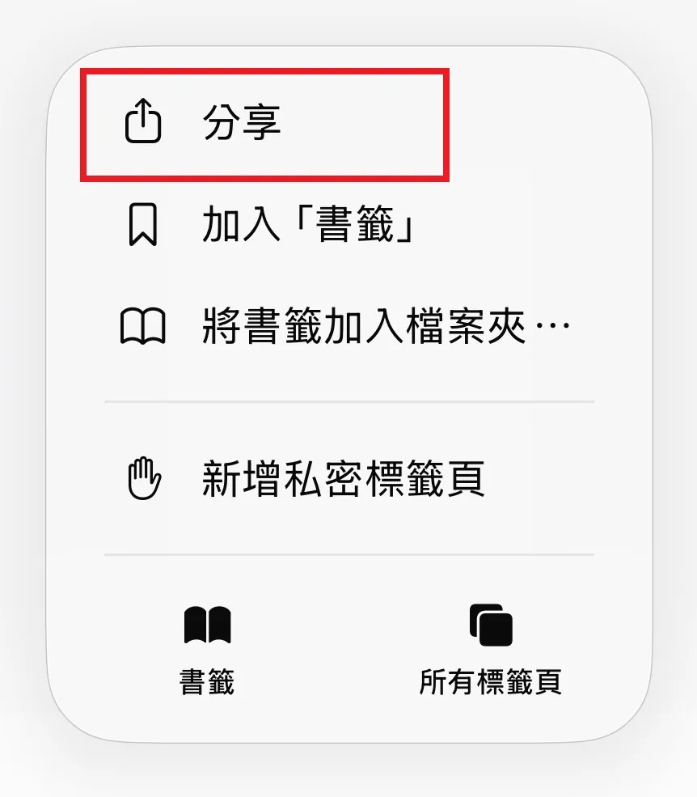
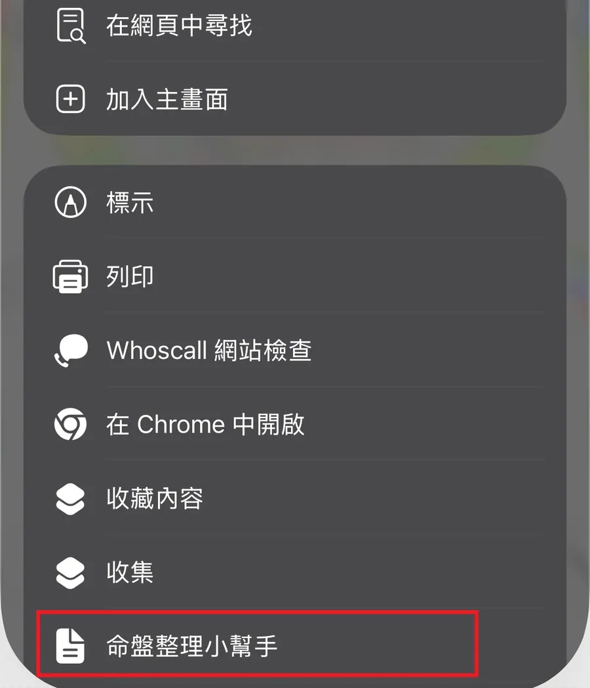
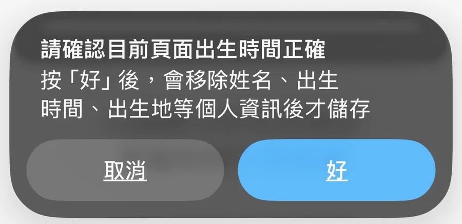
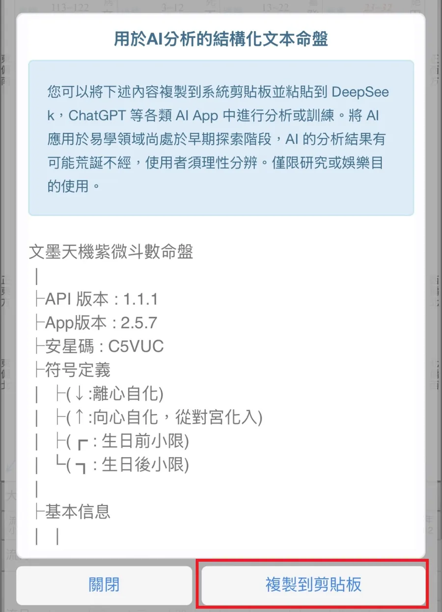
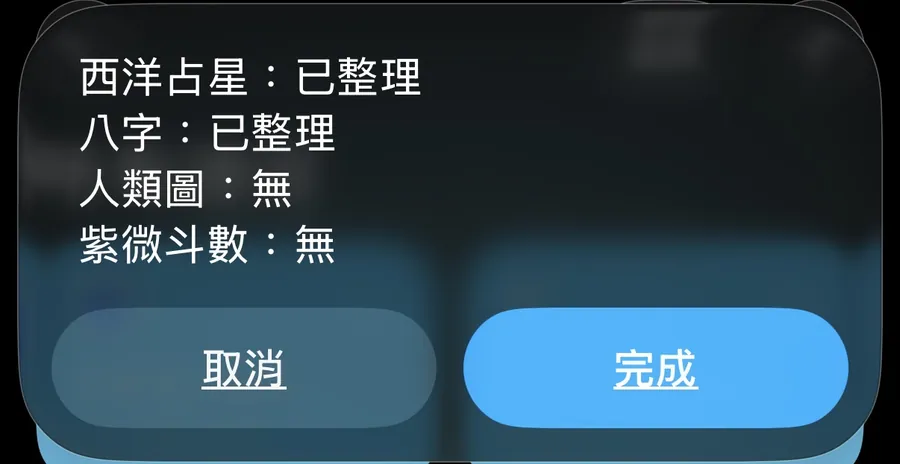
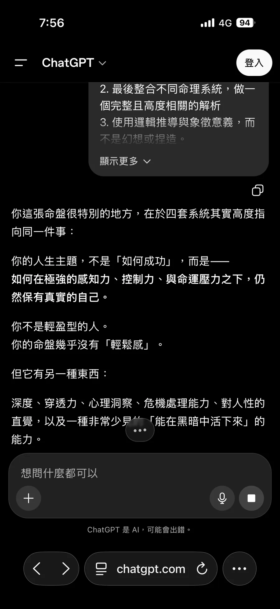
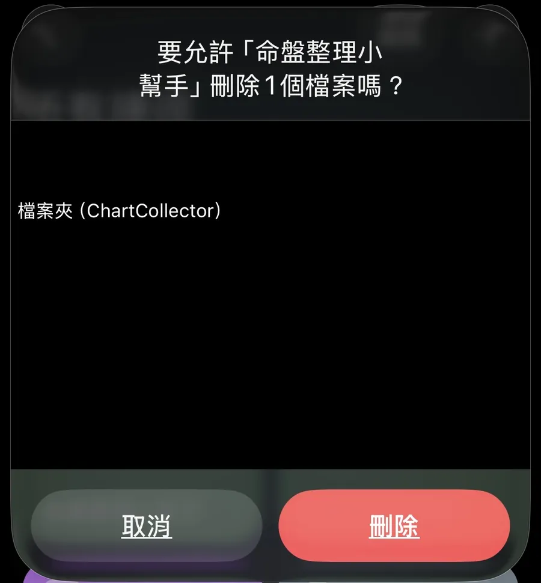
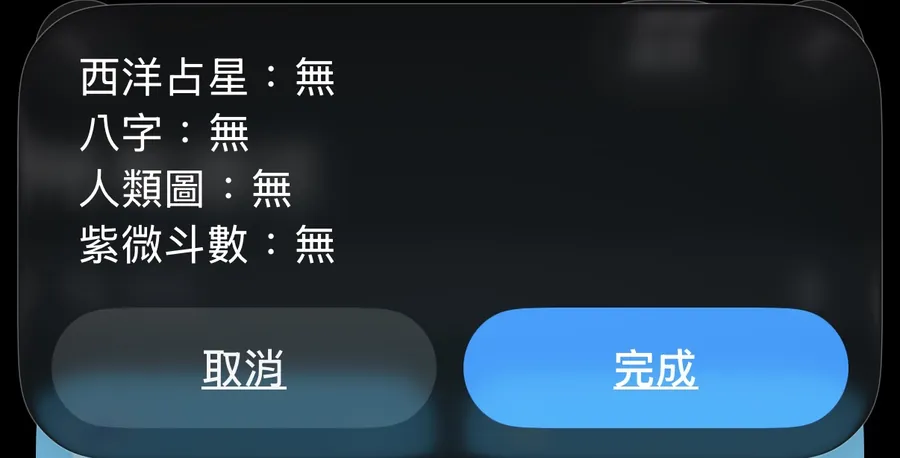

整理命盤資料，讓 AI 更容易閱讀
命盤整理小幫手的重點不是替使用者解讀或下結論，而是協助整理使用者自己取得的排盤結果， 讓資料更容易貼給 AI 閱讀、提問與延伸分析。
有些人會把命盤分析當成自我理解的參考；也有人只是需要一個乾淨的資料整理工具。 你可以依照自己的需求使用，不需要把任何分析結果當成絕對答案。
資料來源說明
本工具目前會引導使用者自行前往以下網站或 APP 完成排盤，再將排盤結果整理成可供 AI 使用的格式。 這些第三方網站與 APP 提供了完整的排盤入口與基礎資料整理服務， 讓使用者可以先自行取得命盤內容。命盤整理小幫手是在此基礎上， 協助把使用者自己取得的資料整理成更適合 AI 閱讀與提問的格式。
功能概覽
完整使用流程
- 開啟「命盤整理小幫手」。
- 選擇要整理的來源：西洋占星、八字、人類圖或紫微斗數。
- 網站類資料完成排盤後，在 Safari 點「分享」並選擇「命盤整理小幫手」。
- 確認排盤資料正確後，按「好」讓捷徑整理並儲存資料。
- 紫微斗數需先在文墨天機 APP 複製結構化文字命盤，再回捷徑儲存。
- 使用「查看整理狀態」確認資料是否完成。
- 選擇「整合 AI Prompt」，產生可貼到 AI 的內容。
- 使用完畢後，可選擇「清除已整理的資料」。
核心操作截圖
這裡只保留主要流程畫面。各第三方網站 / APP 的詳細排盤方式，請依其官方頁面操作。










整合 Prompt 並貼到 AI
四種資料收集完成後，選擇「整合 AI Prompt」。捷徑會產生完整 prompt，你可以貼到 ChatGPT、Gemini、Claude 或其他 AI 工具中使用。
隱私與資料清除
命盤資料可能包含出生時間、出生地等個人資料。基於隱私考量，我希望這類資料盡量留在使用者自己手上。
因此，命盤整理小幫手採用 iOS 捷徑方式運作，主要在你的裝置上整理資料。整理後的檔案也會保存在你自己的 iCloud Drive / Shortcuts 資料夾中。
ToolFrameLab 不主動接收、保存或建立你的命盤資料。
捷徑會在儲存前移除姓名、出生時間、出生地等個人資訊；但不同網站或 APP 的資料格式不同，仍建議使用者自行確認內容。
使用完畢後，建議透過「清除已整理的資料」刪除暫存檔案。
常見問題
這個工具會幫我算命嗎？
不會。它主要是整理你自己取得的排盤結果，並產生可供 AI 使用的 prompt。
這個工具適合怎麼用？
它適合用來整理排盤結果，產生較容易提供給 AI 使用的 prompt。後續可以用於自我理解、提問、整理資料或延伸討論。
它會替我做人生決策嗎？
不會。這個工具只協助整理資料；重大財務、感情、職涯、健康或法律決策，仍建議回到現實狀況、個人判斷與專業建議。
如果我需要正式解讀或專業諮詢怎麼辦？
本工具只負責整理資料，不提供專業命理諮詢。若需要完整排盤報告、課程、命理諮詢或專業解讀，請以第三方網站 / APP 提供的官方服務，或其他你信任的專業命理諮詢為準。
資料會被 ToolFrameLab 看到嗎？
不會主動傳資料給 ToolFrameLab。資料主要在你的裝置上整理與暫存。
一定要會用 iOS 捷徑嗎？
不需要很熟，但需要能安裝並執行捷徑，並依照畫面提示操作。
為什麼用 iOS 捷徑，而不是做成網頁工具？
因為命盤資料本身包含較高隱私性。使用 iOS 捷徑可以讓資料主要留在使用者自己的裝置與 iCloud Drive 裡，不需要先送到 ToolFrameLab 伺服器處理。
Android 可以用嗎？
目前主要是 iOS 捷徑版本，Android 暫時不支援。
為什麼第一次使用會要求開啟捷徑權限？
因為本工具會透過 iOS 捷徑的「在網頁上執行 JavaScript」功能，讀取你目前在 Safari 頁面上看到的排盤內容，並整理成文字資料。若 iOS 顯示安全性限制，請到「設定 → App → 捷徑 → 進階」開啟「允許執行工序指令」。
有想法可以告訴我
如果你有使用上的想法、問題，或想告訴我哪裡有幫助到你，歡迎透過表單留下回饋。